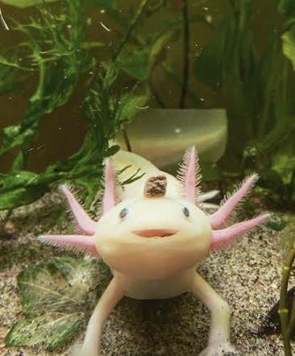

The Amazing Axolotl

Well what is a Axolotls super power and why is it so amazing?
Well there superpower is regeneration!
What is an Axolotl?
An axolotl is a type of salamander that lives its entire life in water. Wild axolotls are native to the lakes and waterways around Mexico City. Unlike many other amphibians, axolotls normally keep their external gills when they become adults.
What is Regeneration?
Regeneration is the ability to regrow damaged or lost parts of the body. Axolotls have an incredible ability to regenerate complex body parts. They can regrow limbs as well as tissues in parts of their spinal cord, heart, brain, skin, and other areas of the body.
Why Do Scientists Study Axolotls?
Scientists study axolotls because their regenerative abilities may help researchers better understand how damaged tissues repair themselves. By studying how regeneration works in axolotls, researchers hope to learn more about regenerative biology and medicine.
Fun Fact!
Axolotls have been used in scientific research for more than 200 years because of their unusual biology and regenerative abilities.